Deploy Streamlit App to Hugging Face Spaces - A Complete Guide
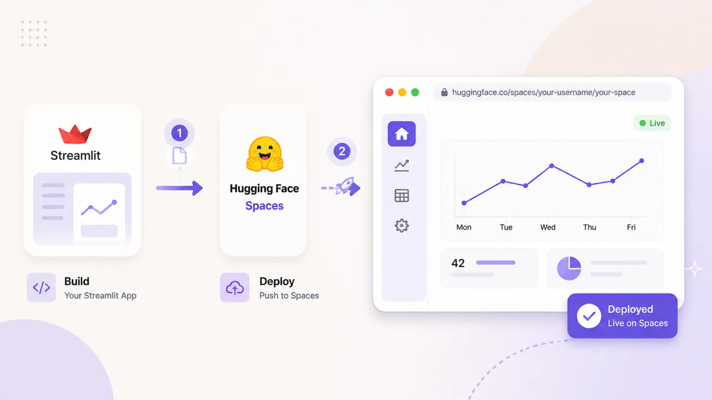
Deploying your machine learning app shouldn't be more challenging than building it. In this guide, you'll discover how to turn a local Streamlit application into a shareable, public-facing demo using Hugging Face Spaces — no DevOps expertise or cloud infrastructure setup required.
💡 Whether you're sharing with stakeholders, showcasing your project, or creating a live portfolio — this guide will help you to deploy machine learning Streamlit web app to Hugging Face.
We'll use a Fashion Recommendation System powered by Retrieval-Augmented Generation (RAG) as our working example. But the deployment process outlined here is fully applicable to any Streamlit-based app.
📚 Table of Contents
1. Introduction
Transitioning a machine learning app from local development to a public platform can feel overwhelming. This guide is here to simplify that process by offering a clear, step-by-step approach to deploying your Streamlit application using Hugging Face Spaces. Whether you're a developer, researcher, or student, you'll learn how to make your app available online with minimal effort.
🔹 Why Hugging Face Spaces? Hugging Face Spaces offers a frictionless deployment experience built specifically for machine learning and data applications. It supports popular tools like Streamlit, Gradio, and even static HTML out of the box. There's no need for DevOps setup or server management — just upload your code and get a live app with a shareable link. It's ideal for quick demos, prototyping, or showcasing your work.
🔹 Example Project: RAG-Based Fashion Recommendation App To illustrate the process, we'll deploy a fashion recommendation app that uses Retrieval-Augmented Generation (RAG). The app helps users find clothing items by typing natural language queries — such as "Show me casual red dresses under ¥2000." The app is already working locally with Streamlit, and now we'll make it available to others via Hugging Face Spaces.
2. Prerequisites
Before deploying your Streamlit app to Hugging Face Spaces, make sure the essentials are ready.
🔹 A Fully Developed Streamlit App Your application should be complete and thoroughly tested in your local environment. It must include a clear entry point like app.py or web_app.py, a requirements.txt file listing all dependencies, and any supporting configuration or utility files.
If your app relies on a vector database such as ChromaDB, ensure that the data directory — for example, chroma_store — is lightweight enough for upload. Alternatively, configure it to rebuild automatically when the app starts to avoid large file uploads.
🔹 A Hugging Face Account To publish your app, you'll need an active Hugging Face account. Creating one is quick and free. Once logged in, you can set up and manage your own Spaces, which serve as hosted environments for ML applications.
Sign up here: https://huggingface.co/join
3. Step-by-Step Deployment to Hugging Face
This section walks you through the process of deploying your locally running Streamlit app to Hugging Face Spaces. From account setup to uploading your code and confirming the deployment, each step is practical and beginner-friendly.
Create a Hugging Face Account
Before you can deploy your app, you need to create an account on Hugging Face — the platform that provides the Spaces feature for hosting ML applications.
🔗 Step 1: Visit Hugging Face
Head over to the official website: https://huggingface.co/
📝 Step 2: Sign Up
Click Sign up at the top-right corner. You can register with your email or link your GitHub or Google account.
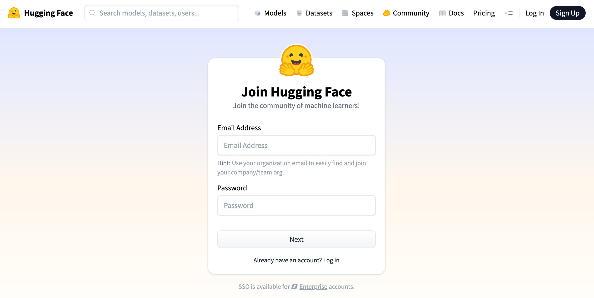
Figure 1: Hugging Face Sign Up
📩 Step 3: Verify Your Email
Once you've signed up, you'll receive a confirmation link in your inbox. Click it to verify and activate your account.
📁 Step 4: Access the Spaces Dashboard
After logging in, click your profile picture and select Spaces from the menu. Alternatively, you can go directly to https://huggingface.co/spaces to view and manage your hosted applications.
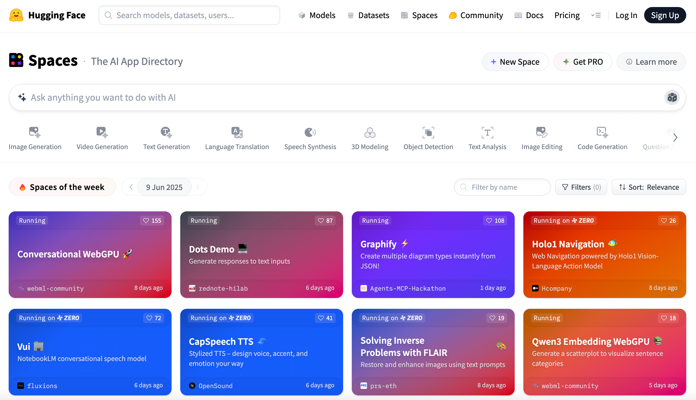
Figure 2: Hugging Face Space Dashboard
Create a New Space
With your Hugging Face account set up, the next step is to create a Space — the environment where your Streamlit app will be hosted. Follow these steps to get started:
🆕 Step 1: Click "Create new Space"
Visit the Spaces page and click the + New Space button. This will open a form where you'll enter the basic information needed to set up your hosted app.
🗂️ Step 2: Fill in the Space Details
You'll be asked to provide the following details:
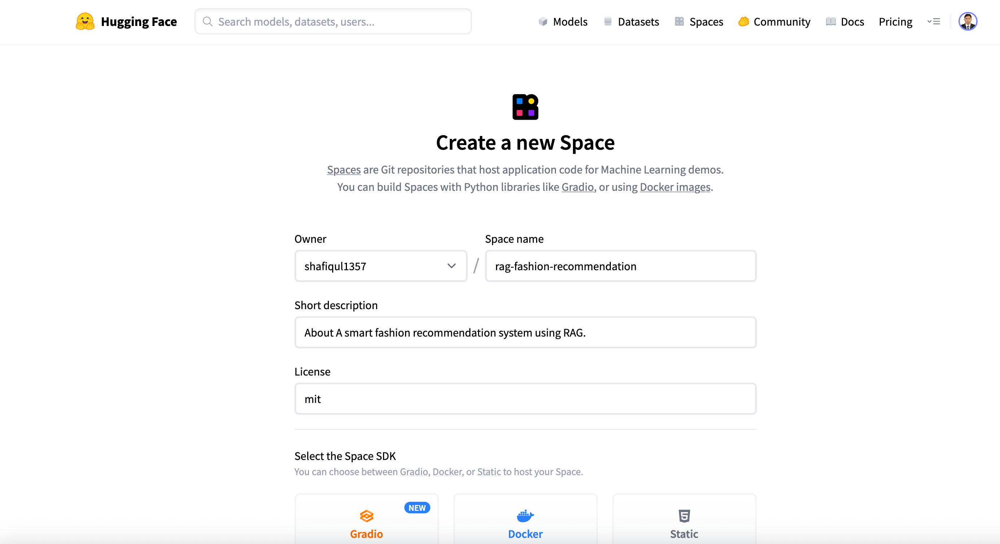
Figure 3: Create New Hugging Face Space
- Space Name: Choose a unique name, such as rag-fashion-recommendation.
- Short Description: Write a concise description within 60 characters.
- License: Select a license that fits your project (e.g., mit).
- Select the Space SDK: If you're using Gradio, choose it directly. If you're using Streamlit, first click the Docker button to view all SDK options, then select Streamlit from the list.
- Space Hardware: By default, the hardware is set to CPU basic · 2 vCPU · 16 GB · FREE. You can click the dropdown to choose upgraded hardware (note: additional costs apply).
- Visibility: Choose whether the Space will be Public (visible to everyone) or Private (restricted access). The default is Public.
- Hardware: The default CPU setup is generally sufficient for most Streamlit apps unless your app requires GPU processing.
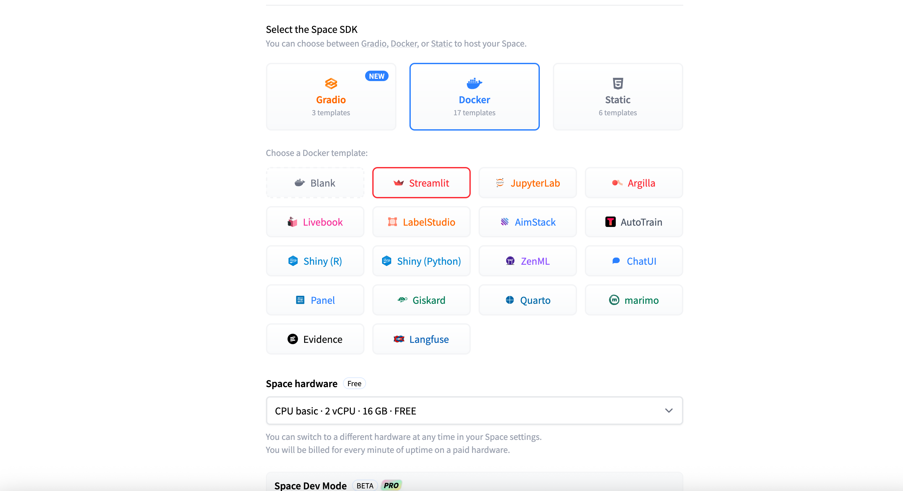
Figure 4: Select Space SDK
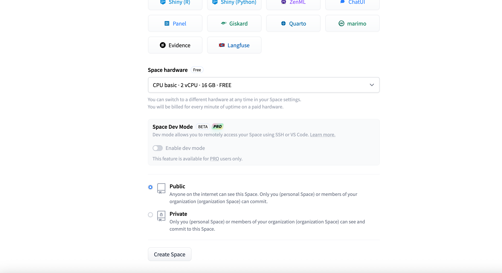
Figure 5: Space Visibility
🖱️ Step 3: Click "Create Space"
Once all required fields are complete, click the Create Space button. Hugging Face will generate a repository for your app and show a default placeholder application until your files are uploaded.
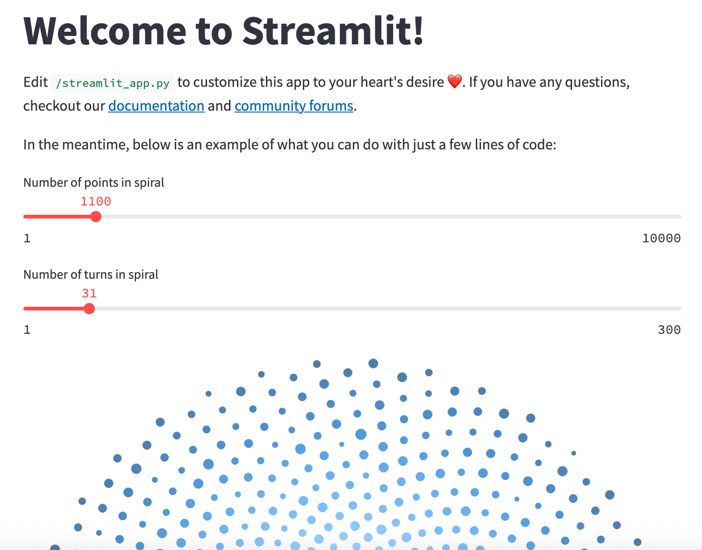
Figure 6: Streamlit Default App
Prepare Your Project for Upload
Before deploying to Hugging Face Spaces, it's crucial to ensure your project is well-organized, self-contained, and optimized for cloud execution. We'll use the rag-fashion-recommendation app as a real-world example to walk through the ideal folder structure and secure configuration.
📁 Example Folder Structure
Here's a typical structure for a deployment-ready app:
Let's break down what to include, what to exclude, and how to securely handle sensitive information.
✅ What You Should Include
Make sure to upload the following components to your Hugging Face Space:
- Main app file: web_app.py — your Streamlit entry point. Hugging Face will automatically detect and run this.
- Supporting modules: Python files such as config.py, vector_db.py, data_retriever.py, re_ranker.py, etc., if imported by your app.
- Support folders: Include folders like data/, prompt/, or utils/ that contain templates, helper functions, or static files.
- Dependency file: requirements.txt — lists all libraries needed for your app to run. Ensure all dependencies are correctly specified with versions.
- Documentation (optional but recommended): README.md with a short app description, sample queries, and usage tips.
- Thumbnail image (optional): A visual preview like figure/thumbnail.png can be referenced in the README for a more polished look.
❌ What You Should Exclude
Avoid uploading the following:
- .env file: This file often contains sensitive data like API keys. Never upload it to your repository — it risks exposing private credentials.
🔐 How to Handle API Keys Securely (Using Hugging Face Secrets)
Hugging Face offers a secure way to manage sensitive credentials via environment secrets. Here's how to add them:
- Navigate to your Space → Settings → Variables and Secrets.
- Click the New Secret button. In the popup, provide the secret name and its value (e.g., your API key), then click Save.
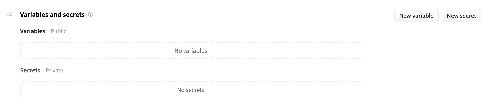
Figure 7: Hugging Face Space Variables and Secrets
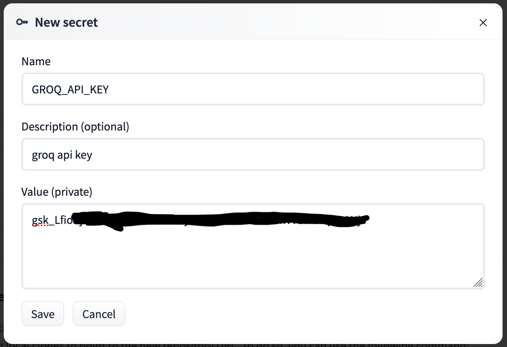
Figure 8: Add Secrets to Face Space
This method keeps your secrets safe even in public repositories and eliminates the need for a .env file.
📋 Pre-Upload Checklist
Before pushing your project to Hugging Face, confirm the following:
- ✅ Your app runs without errors locally
- ✅ web_app.py is present and correctly references all necessary modules
- ✅ All required dependencies are listed in requirements.txt
- ✅ Sensitive credentials are stored using Hugging Face Secrets
- ✅ README.md is added to help users understand your app
- ✅ .env and large or unnecessary local files are excluded using .gitignore
Upload Source Code
Once your project is organized and ready, it's time to upload it to your Hugging Face Space. You can do this in two ways: by using Git over SSH for version-controlled uploads or via a simple drag-and-drop through the web interface. Both methods work well — choose the one that suits your workflow.
🛠️ Option 1: Upload Using Git over SSH
If you're familiar with Git and want full control over versioning, you can push your project using SSH. Here's how:
🔐 Step 1: Set Up SSH Access
- Generate an SSH key if you don't already have one.
- Add the public key to your Hugging Face account under Settings → SSH & GPG Keys.
📝 Step 2: Clone Your Space
- Go to your newly created Space and click the three-dot menu at the top right.
- Select Clone repository from the dropdown.
- A popup will show the Git clone command. Copy and run this command to clone the repo locally.
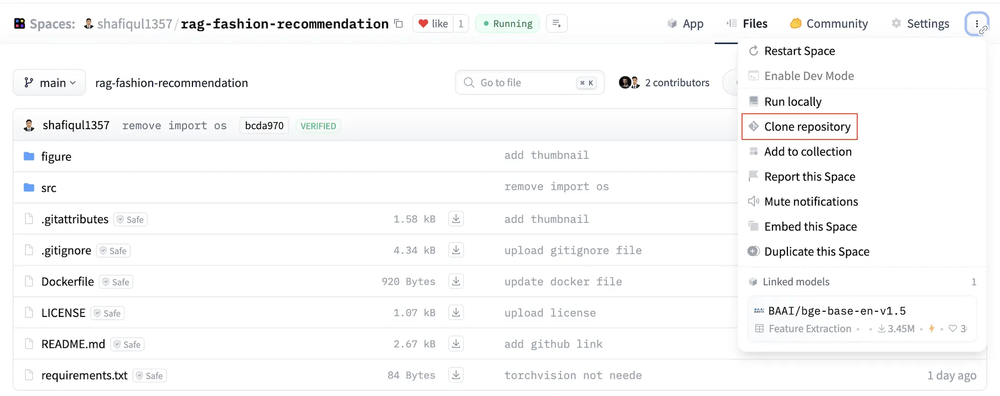
Figure 9: Clone Repository
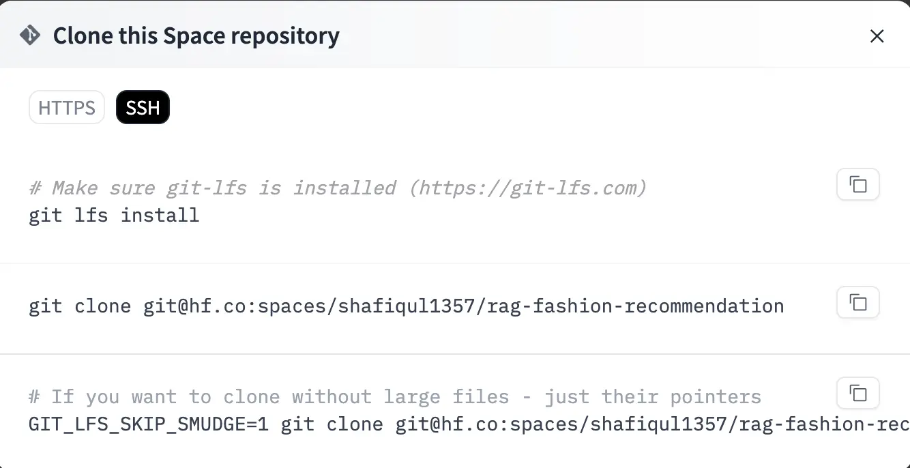
Figure 10: Clone Command
🌐 Step 3: Push Your Project
- Spaces that use Streamlit with Docker have a src folder in the root directory. Place all your project files inside this src folder.
- Edit the Dockerfile if necessary to customize how the app runs.
- Use standard Git commands (git add, git commit, git push) to push your code to Hugging Face.
⚠️ Common SSH Issue: Port 22 Blocked
In some networks (like corporate or university Wi-Fi), SSH traffic on port 22 may be blocked, causing Git commands to fail.
If this happens, the drag-and-drop method is a great fallback — it requires no special configuration and works in any browser.
📂 Option 2: Drag-and-Drop Upload (Recommended)
This method is straightforward and ideal for users unfamiliar with Git or those operating behind restricted networks.
🖱️ Steps:
- Open your Hugging Face Space and go to the Files and versions tab.
- Click the + Contribute button and choose Upload files from the dropdown.
- Select the required files and folders, then drag and drop them into the upload area.
- After upload, Hugging Face will automatically install dependencies and launch your app.
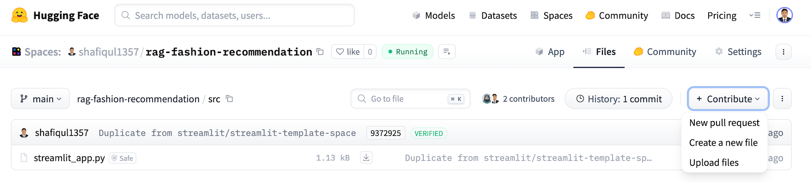
Figure 11: Upload files by drag and drop
In some cases, specific file types may not upload correctly using drag and drop. For example, in the RAG fashion project, the ChromaDB directory (which was pre-populated) included files like .bin extensions, which caused upload errors.
To solve this, the entire ChromaDB folder was zipped and uploaded to the src directory. This approach ensures all files are preserved while avoiding file-type restrictions.
4. Updating requirements.txt
When you create a new Space using the Streamlit SDK on Hugging Face, the platform automatically generates a default project structure that includes a minimal Dockerfile and a placeholder requirements.txt file. These two components play a crucial role in defining the environment your app will run in — from which Python libraries are installed to how the container is built and started.
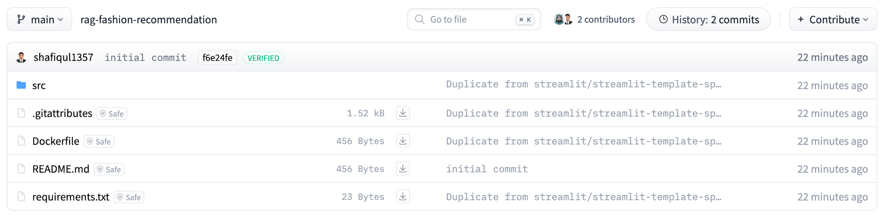
Figure 12: Hugging face space root directory structure
However, the generated requirements.txt typically includes only a few common packages and doesn't reflect the actual dependencies your app may rely on. To ensure your deployment succeeds and your app behaves exactly as it does locally, it's important to explicitly list all the libraries your code depends on.
🛠️ Why Updating Matters
During deployment, Hugging Face uses the Dockerfile to build a containerized version of your environment. Inside that Dockerfile, Hugging Face references your requirements.txt file to install all required Python packages. If your app imports a library that's missing from this list, the build process will either fail entirely or the app will crash at runtime with errors such as ModuleNotFoundError.
So before uploading your app, take a few moments to carefully review and update requirements.txt. This small step can save hours of debugging and deployment frustration.
✅ Required Dependencies for This Project
Based on the RAG-powered fashion recommendation system, your app may depend on a combination of machine learning, embedding, vector search, and UI-related libraries. A typical requirements.txt for this project might include the following:
Each of these libraries plays a specific role:
- streamlit - Renders the interactive frontend for your web app.
- torch - Handles deep learning and tensor operations.
- sentence-transformers - Generates vector embeddings from user queries and product descriptions.
- python-dotenv - Loads environment variables from local files or Hugging Face secrets.
- langchain-groq - Supports prompt chaining and LLM integration for enhanced retrieval and re-ranking.
- chromadb - Manages vector storage and similarity search operations.
- watchdog - Enables hot-reloading and file monitoring during local development.
This list can vary depending on your project's architecture, so always double-check for additional dependencies your code may be importing.
🔸 Tip: To ensure consistency across environments, you can pin versions to avoid compatibility issues. For example: torch==2.1.0 or streamlit==1.30.0. Version pinning is especially helpful if you're collaborating with others or deploying to multiple environments.
5. Modifying the Docker Configuration
Hugging Face Spaces auto-generates a basic Dockerfile when you create a new Space using the Streamlit SDK. While this default setup works for very simple apps, it usually falls short for production-level projects that involve custom scripts, vector databases, or more advanced dependencies.
In this section, we'll walk through a customized Dockerfile tailored specifically for the RAG-based fashion recommendation app. We'll break down each part of the file, explaining why it's important — especially in a restricted, containerized environment like Hugging Face Spaces. Here is the docker file which is used in this project.
🛠️ Customized Dockerfile with Detailed Explanations
Here is a line by line explanation of custom docker file that is used in the app.
🔹 Base Image
A lightweight python:3.10-slim image is typically used to reduce image size and startup time. It provides a clean Python environment with minimal bloat.
🔹 Working Directory
The command WORKDIR /app sets the working directory for all subsequent instructions. This ensures a clean and consistent context for file operations.
🔹 Install OS-level Dependencies
To support various runtime operations, the Dockerfile installs essential system packages:
- unzip - For extracting compressed files, such as chroma_store.zip.
- curl - Used for running health checks and interacting with web resources.
- build-essential - A set of tools for compiling Python packages that include native extensions.
- git - Required for downloading code from Git repositories or handling version control.
🔹 Copy App Files
The Dockerfile copies your Python source code and related assets into the container so the app can run inside the build environment.
- Make sure all necessary scripts, such as web_app.py and helper modules, are included.
- Include chroma_store.zip inside the src/ directory before uploading, as this file contains the prebuilt vector database.
🔹 Extract Vector Database
To ensure the ChromaDB data is available at runtime, the Dockerfile extracts the vector database from a compressed archive.
- chroma_store.zip contains prebuilt embeddings for the vector database used by ChromaDB.
- Instead of extracting it inside the src/ folder or project root (which may cause permission errors), it is extracted to /tmp/chroma_store — a writable system directory.
- chmod -R 777 is applied to ensure that all files inside are fully accessible by the container's non-root user, avoiding read/write restrictions during execution.
🔹 Install Python Dependencies
all required Python packages listed in your requirements.txt file using pip.
- Includes essential libraries such as streamlit, chromadb, langchain-groq, and others used in your project.
- Ensures your app has the same environment on Hugging Face as it does locally.
🔹 Set Writable Directory for Streamlit
Streamlit stores session state and configuration files in a hidden folder, which needs to be writable.
- By default, it tries to create the .streamlit folder in the home directory (/root), which is not writable in Hugging Face's container environment.
- Redirecting this folder to /tmp/.streamlit ensures the app can manage sessions and configuration without encountering permission issues.
🔹 Disable Analytics
Streamlit collects anonymous usage statistics by default, which may cause issues in restricted environments.
- Disabling analytics prevents unexpected network calls, improving privacy and reliability in containerized setups like Hugging Face Spaces.
- It also reduces the chance of connectivity-related errors or delays during app initialization.
🔹 Redirect Hugging Face Cache Directory
Some libraries used in LLM applications rely on local caching to store model weights and configuration files.
- By default, libraries like sentence-transformers and transformers store cache data in ~/.cache.
- In Hugging Face Spaces, writing to the home directory is restricted, which can cause permission errors during model loading.
- Setting the environment variable HF_HOME=/tmp/huggingface redirects the cache location to a writable directory, ensuring smooth execution and reuse of downloaded models.
🔹 Expose the Streamlit Port
Streamlit runs by default on port 8501, and this needs to be explicitly exposed so Hugging Face can serve the app publicly.
- The EXPOSE 8501 command in the Dockerfile tells the container platform which port the app listens on.
- Hugging Face connects this port to the public interface, allowing users to access your app from the browser.
🔹 Health Check
A health check verifies that your app has started successfully and is responsive to incoming requests.
- If the app doesn't return a successful response within a certain time frame, Hugging Face considers the deployment unhealthy.
- This mechanism helps catch broken builds early and prevents users from accessing a non-functional interface.
- Typically, a simple curl command is used in the Dockerfile to check if the Streamlit app is running on port 8501.
🔹 Entry Point
Defines the default command that runs when the container starts — in this case, launching the Streamlit application.
- Starts the Streamlit app located in the src/ directory.
- Specifies 8501 as the port and binds it to 0.0.0.0 to make the app publicly accessible through Hugging Face's interface.
By customizing the Docker configuration in this way, you ensure your app runs reliably in a secure, containerized environment — with all dependencies in place and system-level quirks accounted for.
6. Build and Run App
Unlike traditional platforms, Hugging Face Spaces does not offer a manual Build or Run button. Instead, it uses a commit-based workflow similar to GitHub. Whenever you upload new files or modify existing ones in the Space repository, Hugging Face automatically triggers a build followed by execution.
To update your app and trigger a new build, follow these steps:
- Navigate to the Files tab in your Hugging Face Space.
- Select the file you want to edit.
- Click the Edit button at the top of the file view.
- Apply the necessary changes. Scroll to the bottom, write a commit message, and click Commit changes to main.
- This action will automatically trigger a new build. Once completed, your updated app will be live and running. You can view your deployed app by visiting its URL. For example: Fashion Recommendation System
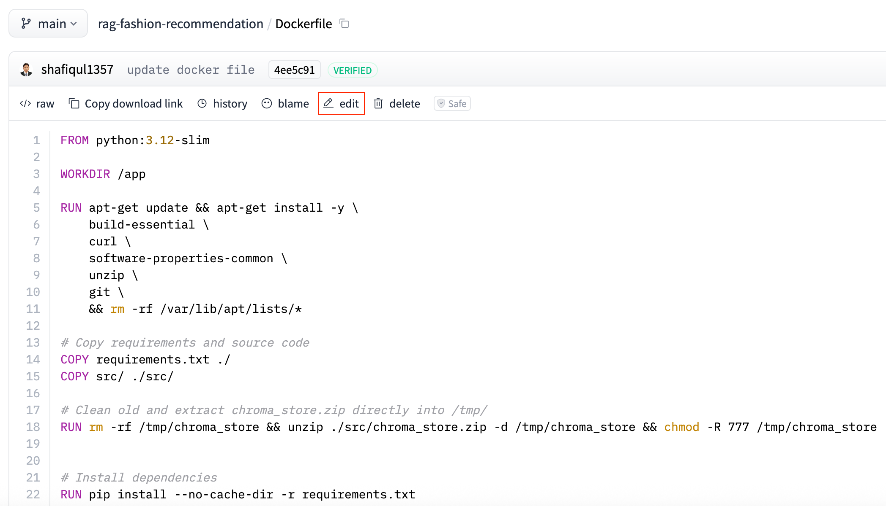
Figure 13: Edit File in Hugging Face Space
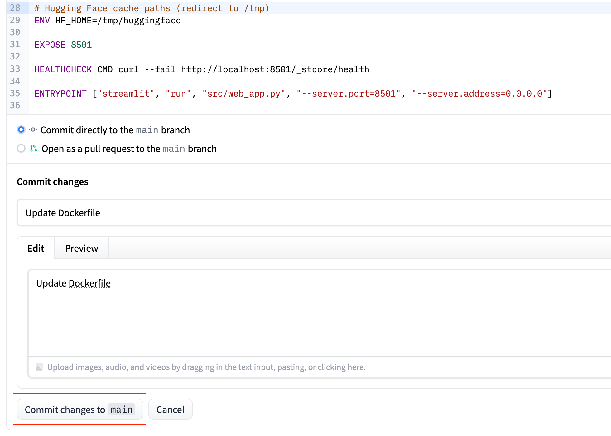
Figure 14: Commit Changes in Hugging Face Space
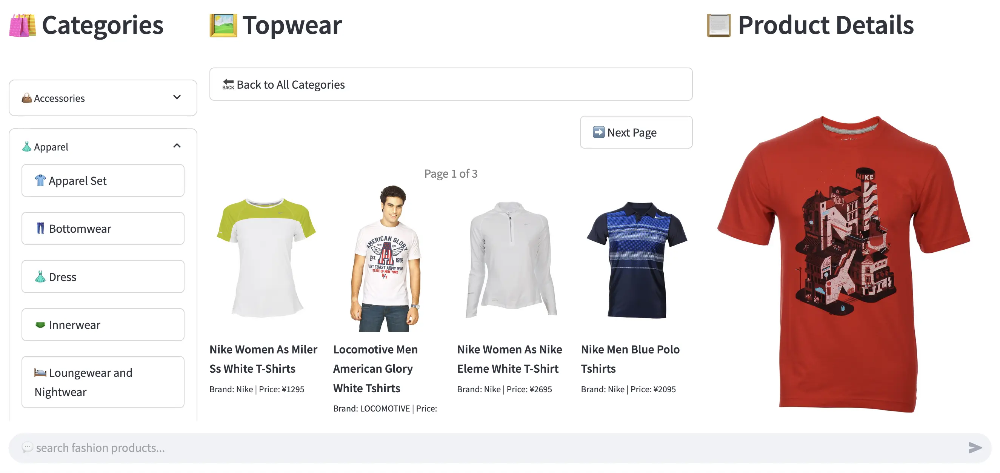
Figure 15: Fasion Recommendation App
7. Writing an Effective README File
A well-crafted README.md is more than just a formality — it's your app's first impression. Whether users land on your Hugging Face Space or GitHub repository, the README provides the initial context they need to understand your project.
It should clearly communicate the app's purpose, how to use it, and any setup instructions. An effective README not only improves the user experience but also boosts visibility by including proper tags, descriptions, and metadata for discoverability.
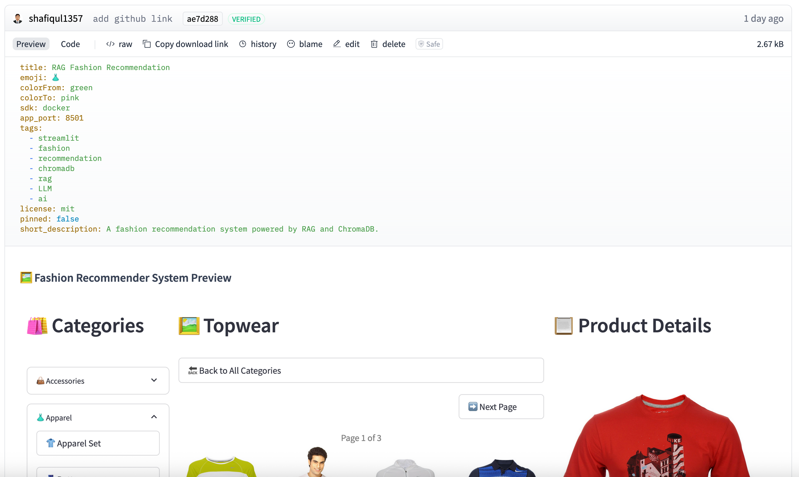
Figure 16: README file of fashion recommendation system
Let's break down what to include and how to structure it, using our current README file.
📄 Top-Level Metadata (YAML Block)
At the very top of your README.md file, Hugging Face supports a special metadata block written in YAML format. This block defines how your Space is presented on the platform — including its title, description, tags, license, and visibility settings. It's a useful way to enhance both the appearance and discoverability of your app. Below is a sample used in this project.
✅ Why it's important:
- title, emoji, and colorFrom/colorTo define the visual branding of your Space.
- sdk and app_port tell Hugging Face how to run your app — especially important for Docker-based deployments.
- tags improve the discoverability of your app through search and filtering on the platform.
- short_description appears in preview cards and Space listings to give users a quick summary.
🖼️ Visual Preview
Including a UI screenshot or thumbnail image in your README helps users quickly understand what your app does. A well-chosen preview can improve engagement and make your Space look more professional at first glance.
Make sure the path is correct and relative to the README file.
📌 Recommended README Sections
Below is a detailed breakdown of the key sections you should include in your README.md to make it informative, useful, and professional.
1. Project Introduction
Start with a concise overview of what your application does. Mention its primary use case and the core technologies or frameworks involved. This section sets the context for first-time visitors and helps them understand the value of your app right away.
2. Features
List the main features of your application to showcase its capabilities. Use bullet points or emojis to make this section easy to scan. Focus on user-facing functionality that sets your app apart.
3. Technology Stack
List the technologies used in your app — such as the frontend framework, backend runtime, vector database, LLM provider, and embedding model. This gives technical users quick insight into how the system is built and what powers its functionality.
4. How to Search Products
This section is especially helpful for users. Show examples of actual queries they can try, and explain the kinds of input your app understands.
✅ Tip: Encourage users to use natural language. Highlight that they can filter by attributes like gender, season, price, brand, style, and more. Sample queries make the app feel more approachable and intuitive.
5. GitHub Repository
Include a direct link to your app's source code so users and developers can explore, clone, or contribute to the project.
6. Live Demo Link
Provide a direct link to the live version of your app so users can try it out instantly. This makes your project more engaging and accessible without requiring any setup.
✅ Best Practices
- Use headings (##, ###) to organize content and create a clear visual hierarchy.
- Use bullet points, emojis, and code blocks to improve readability and visual engagement.
- Keep content concise but meaningful — readers should understand what your app does within 30 seconds of scanning the README.
8. Searching Your App
Once your app is deployed on Hugging Face Spaces, it becomes searchable within the broader Hugging Face ecosystem. This makes it easy for users — including yourself — to find and access it using the platform's built-in search functionality.
🔍 Using the Hugging Face Search Bar
- Go to the Hugging Face Spaces dashboard: https://huggingface.co/spaces
- Type the name of your app into the search bar — for example: fashion recommendation.
- The search results will display all relevant Spaces. You can locate your app in the list based on its name, description, or tags.
Here's an example search result for this app.
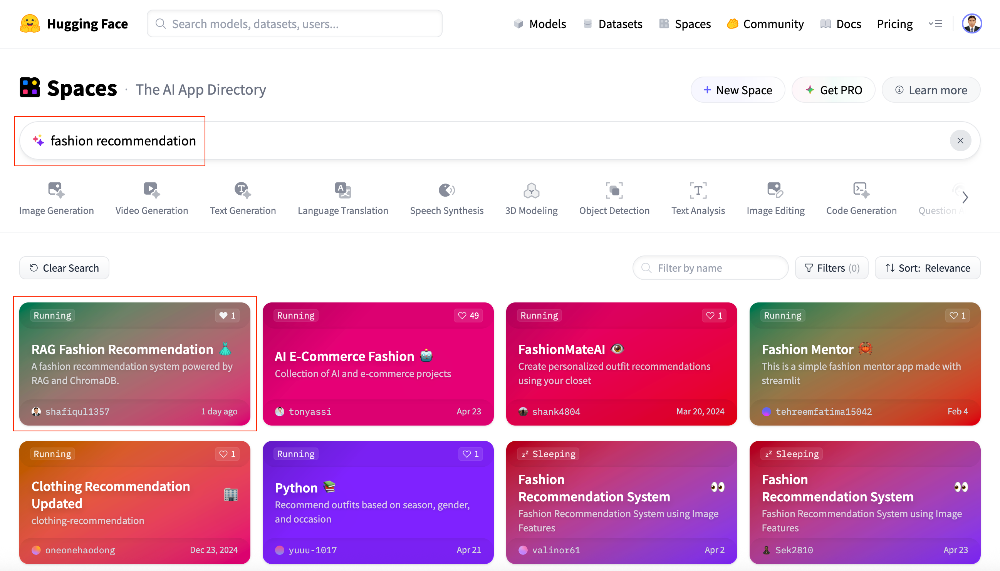
Figure 17: Search app by key word
📁 Direct Navigation
If you already know the direct URL of your deployed app, you can access it anytime by navigating straight to the link — no search required. This is the fastest way to open your app for testing, sharing, or demonstration purposes.
In this case: 👉 https://huggingface.co/spaces/shafiqul1357/rag-fashion-recommendation
9. Conclusion
Deploying your Streamlit app to Hugging Face Spaces doesn't have to be complicated. With a well-organized project structure, a few essential configuration adjustments, and a clear README.md, you can transform a local prototype into a fully functional, cloud-hosted application — all without dealing with servers or infrastructure management.
In this guide, we covered the full deployment lifecycle using a practical example — a RAG-based fashion recommendation system. From creating your Space and preparing the project files to securing credentials, customizing the Dockerfile, and writing an effective README, each step contributes to a reliable and professional deployment experience.
Whether you're launching a personal portfolio project, showcasing a client demo, or deploying an internal tool, Hugging Face Spaces provides a developer-friendly platform to bring your ideas online and share them with the world.

Technical Stacks
 Python
Python Docker
Docker Streamlit
Streamlit Hugging Face
Hugging Face RAG
RAG Groq
Groq Llama 3
Llama 3 Chroma DB
Chroma DB Prompt Engineering
Prompt Engineering
References
-
 GitHub Repository:
RAG Fashion Recommendation System
GitHub Repository:
RAG Fashion Recommendation System
-
Live App in Hugging Face Space:
Fashion Recommendation App
-
Streamlit Website:
Streamlit
-
 Medium Article:
Read the Blog on Medium
Medium Article:
Read the Blog on Medium